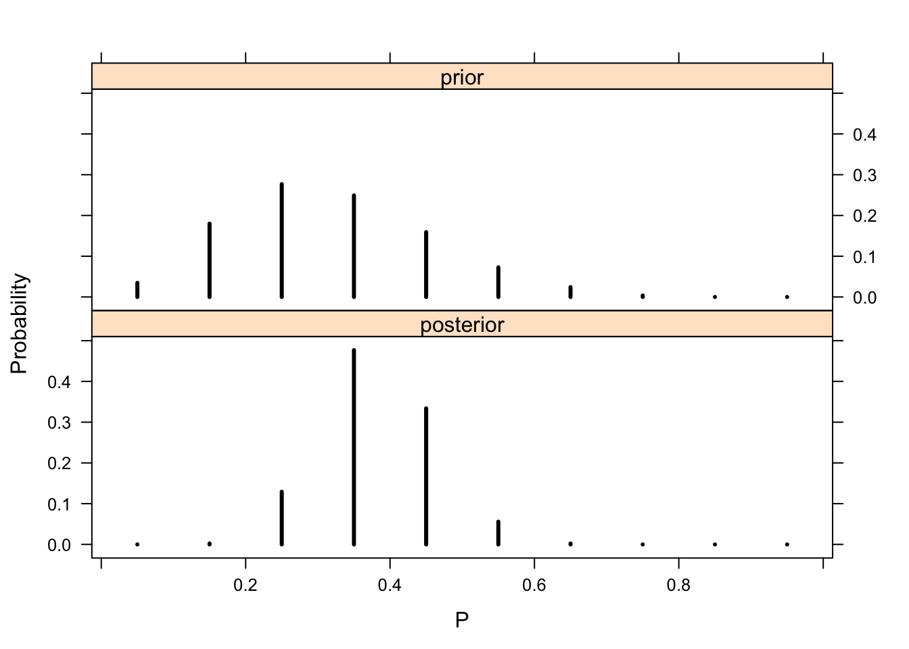
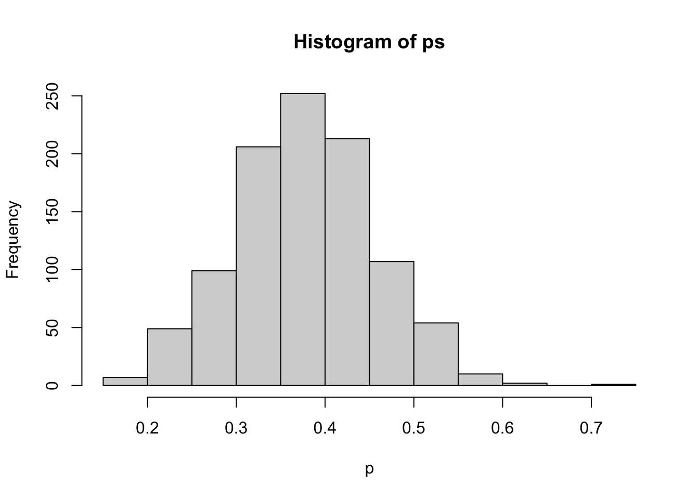
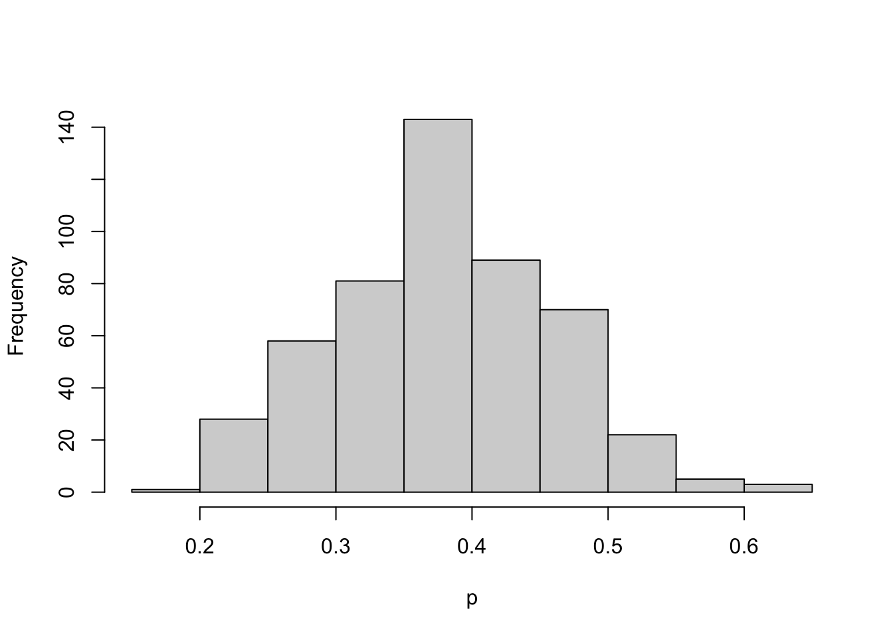
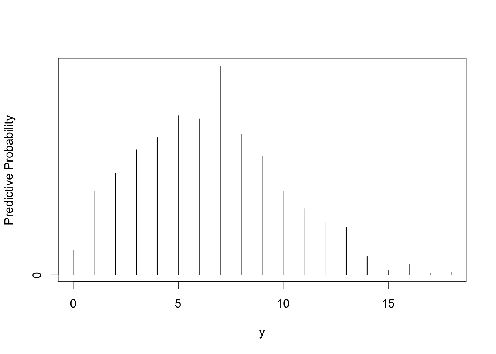

Chapter 2 Introduction to Bayesian Thinking
2.1 Learning About the Proportion of Heavy Sleepers
Want to learn about \(p\), the proportion of heavy sleepers. Take a sample of 27 students and 11 are heavy sleepers.
2.2 Using a Discrete Prior
library(LearnBayes)The prior for \(p\):
p <- seq(0.05, 0.95, by = 0.1)
prior <- c(1, 5.2, 8, 7.2, 4.6, 2.1,
0.7, 0.1, 0, 0)
prior <- prior / sum(prior)
plot(p, prior, type = "h",
ylab="Prior Probability")
The posterior for \(p\):
data <- c(11, 16)
post <- pdisc(p, prior, data)
round(cbind(p, prior, post),2)## p prior post
## [1,] 0.05 0.03 0.00
## [2,] 0.15 0.18 0.00
## [3,] 0.25 0.28 0.13
## [4,] 0.35 0.25 0.48
## [5,] 0.45 0.16 0.33
## [6,] 0.55 0.07 0.06
## [7,] 0.65 0.02 0.00
## [8,] 0.75 0.00 0.00
## [9,] 0.85 0.00 0.00
## [10,] 0.95 0.00 0.00library(lattice)
PRIOR <- data.frame("prior", p, prior)
POST <- data.frame("posterior", p, post)
names(PRIOR) <- c("Type", "P", "Probability")
names(POST) <- c("Type","P","Probability")
data <- rbind(PRIOR, POST)xyplot(Probability ~ P | Type, data=data,
layout=c(1,2), type="h", lwd=3, col="black")
2.3 Using a Beta Prior
Construct a beta prior for \(p\) by inputting two percentiles:
quantile2 <- list(p=.9, x=.5)
quantile1 <- list(p=.5, x=.3)
(ab <- beta.select(quantile1,quantile2))## [1] 3.26 7.19Bayesian triplot:
a <- ab[1]
b <- ab[2]
s <- 11
f <- 16
curve(dbeta(x, a + s, b + f), from=0, to=1,
xlab="p", ylab="Density", lty=1, lwd=4)
curve(dbeta(x, s + 1, f + 1), add=TRUE,
lty=2, lwd=4)
curve(dbeta(x, a, b), add=TRUE, lty=3, lwd=4)
legend(.7, 4, c("Prior", "Likelihood",
"Posterior"),
lty=c(3, 2, 1), lwd=c(3, 3, 3))
Posterior summaries:
1 - pbeta(0.5, a + s, b + f)## [1] 0.0690226qbeta(c(0.05, 0.95), a + s, b + f)## [1] 0.2555267 0.5133608Simulating from posterior:
ps <- rbeta(1000, a + s, b + f)hist(ps, xlab="p")
sum(ps >= 0.5) / 1000## [1] 0.067quantile(ps, c(0.05, 0.95))## 5% 95%
## 0.2470285 0.51144422.4 Using a Histogram Prior
Beliefs about \(p\) are expressed by a histogram prior. Illustrate brute force method of computing the posterior.
midpt <- seq(0.05, 0.95, by = 0.1)
prior <- c(1, 5.2, 8, 7.2, 4.6, 2.1, 0.7,
0.1, 0, 0)
prior <- prior / sum(prior)curve(histprior(x, midpt, prior), from=0, to=1,
ylab="Prior density", ylim=c(0, .3))
s <- 11
f <- 16curve(histprior(x,midpt,prior) *
dbeta(x, s + 1, f + 1),
from=0, to=1, ylab="Posterior density")
p <- seq(0, 1, length=500)
post <- histprior(p, midpt, prior) *
dbeta(p, s + 1, f + 1)
post <- post / sum(post)
ps <- sample(p, replace = TRUE, prob = post)hist(ps, xlab="p", main="")
2.5 Prediction
Want to predict the number of heavy sleepers in a future sample of 20.
Discrete prior approach:
p <- seq(0.05, 0.95, by=.1)
prior <- c(1, 5.2, 8, 7.2, 4.6,
2.1, 0.7, 0.1, 0, 0)
prior <- prior / sum(prior)
m <- 20
ys <- 0:20
pred <- pdiscp(p, prior, m, ys)
cbind(0:20, pred)## pred
## [1,] 0 2.030242e-02
## [2,] 1 4.402694e-02
## [3,] 2 6.894572e-02
## [4,] 3 9.151046e-02
## [5,] 4 1.064393e-01
## [6,] 5 1.124487e-01
## [7,] 6 1.104993e-01
## [8,] 7 1.021397e-01
## [9,] 8 8.932837e-02
## [10,] 9 7.416372e-02
## [11,] 10 5.851740e-02
## [12,] 11 4.383668e-02
## [13,] 12 3.107700e-02
## [14,] 13 2.071698e-02
## [15,] 14 1.284467e-02
## [16,] 15 7.277453e-03
## [17,] 16 3.667160e-03
## [18,] 17 1.575535e-03
## [19,] 18 5.381536e-04
## [20,] 19 1.285179e-04
## [21,] 20 1.584793e-05Continuous prior approach:
ab <- c(3.26, 7.19)
m <- 20
ys <- 0:20
pred <- pbetap(ab, m, ys)Simulating predictive distribution:
p <- rbeta(1000, 3.26, 7.19)y <- rbinom(1000, 20, p)table(y)## y
## 0 1 2 3 4 5 6 7 8 9 10 11 12 13 14 15 16 17 18
## 16 54 66 81 89 103 101 135 91 77 54 43 34 31 12 3 7 1 2freq <- table(y)
ys <- as.integer(names(freq))
predprob <- freq / sum(freq)
plot(ys, predprob, type="h", xlab="y",
ylab="Predictive Probability")
dist <- cbind(ys, predprob)Construction of a prediction interval:
covprob <- .9
discint(dist, covprob)## $prob
## 12
## 0.928
##
## $set
## 1 2 3 4 5 6 7 8 9 10 11 12
## 1 2 3 4 5 6 7 8 9 10 11 12